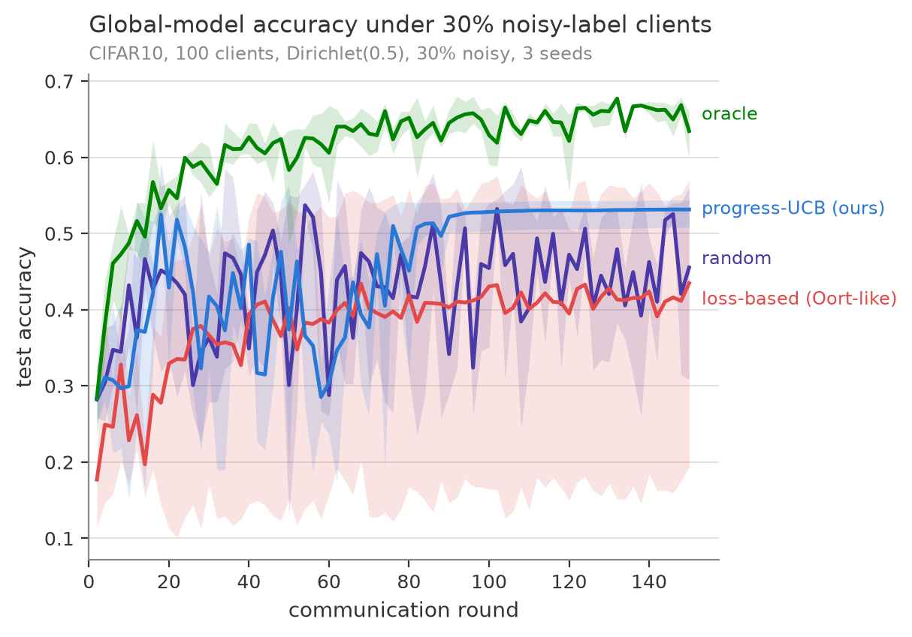
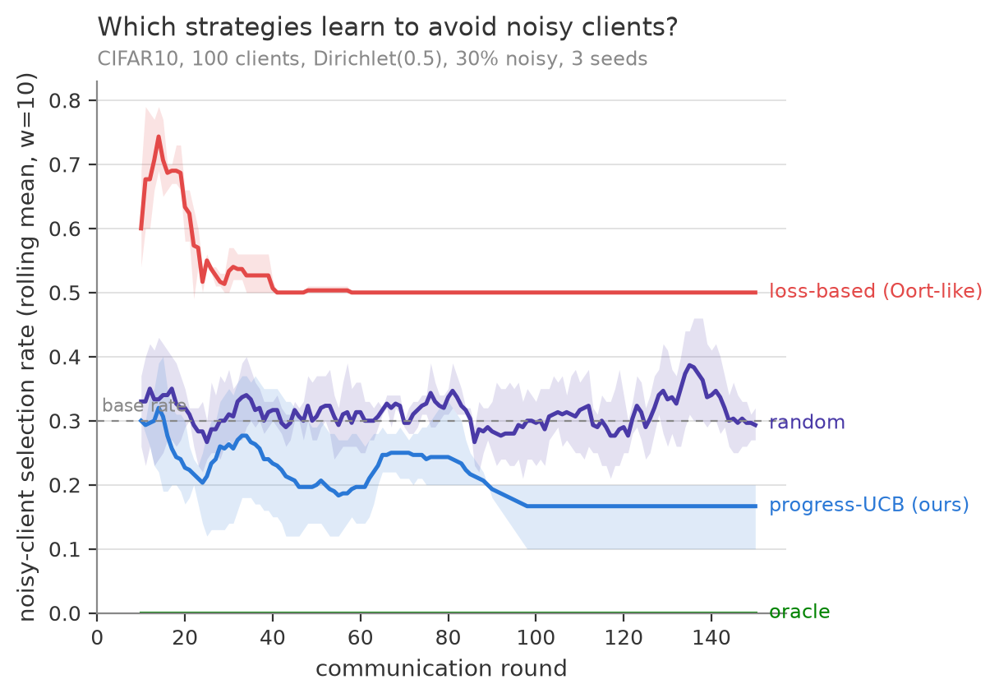
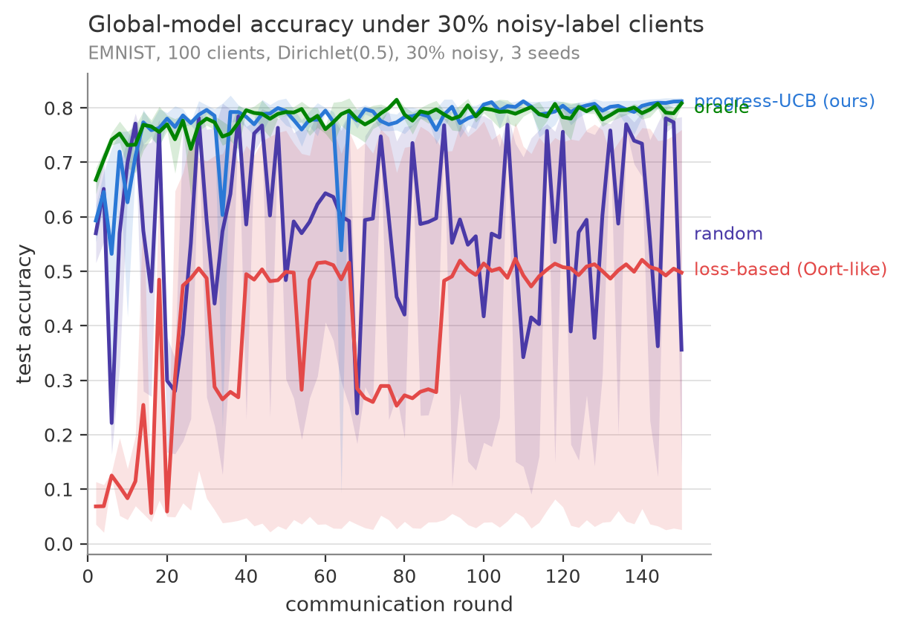
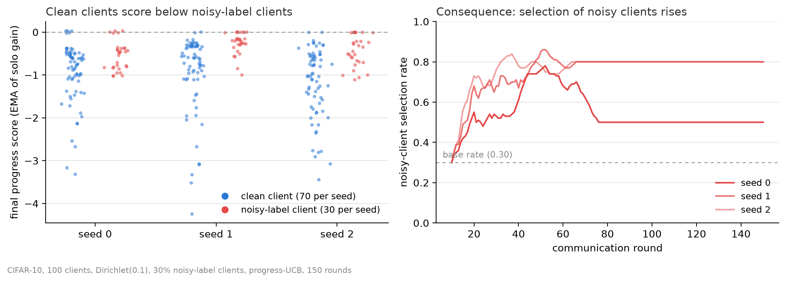

When a federated server picks which devices to learn from, the common rule is "pick the ones the model gets most wrong". Devices with corrupted data always look wrong, so that rule keeps choosing them. FLProgress picks devices by how fast they improve the model instead. Noise can make a device look bad forever, but it can't fake progress.
Four short games below show how it works. The real experiment numbers come after.
The whole question is which phones to pick each round.
12 phones. 4 have corrupted labels, but you don't know which. Pick 3 phones per round for 8 rounds and get the shared model as accurate as you can. First play with the information the standard rule uses, then with the information FLProgress uses.
Toy model. The games use a small simulation that keeps only the core mechanism: correct data teaches, corrupted data damages, and corrupted data keeps a high loss no matter what. It exaggerates the gaps. The real experiment numbers are in Real results.
Each card shows a phone's loss over the last rounds: how wrong the model is on that phone's data, and how that has been changing. Which phone should the server train on next? After you choose, you'll see how much each one would really have improved the model.
The idea comes from curiosity-driven reinforcement learning. A robot that is rewarded for surprise explores a room. Then someone switches on a TV showing static. Static is always surprising, so the robot stares at it forever. A robot rewarded for getting less surprised (learning progress) looks at the TV, learns nothing, and moves on. A phone with random labels is the TV of federated learning.
Goes wherever its prediction error is highest. This is the "pick the worst" rule.
Goes wherever its error has been falling fastest. This is the FLProgress rule.
Each object shows a bar of how much the robot still has to learn about it. The four objects can be learned. The TV can't: its static never becomes predictable. Try switching the TV off to see both robots behave the same.
Scale up to 40 phones, 6 picked per round, 60 rounds. Set how many phones are corrupted and how unevenly the data is spread, bet on a strategy, and watch them race.
About the "oracle": it cheats by knowing which phones are corrupted, so it isn't in the betting. It shows the best you could do by simply avoiding noise. Limitation: this toy model doesn't reproduce the real method's failure under extreme skew. See Where it fails.
CNNs trained with FedAvg, 100 clients, 10 picked per round, 30% of clients with fully random labels, 150 rounds, 3 seeds. These numbers are copied from the project's result files, not from the toy model.



Both came from the method's own logs. Both were first treated as bugs, until the per-client data showed they were real.
When each client holds only one or two classes (Dirichlet 0.1), the way the method measures a client's progress turns upside down. It measures progress by applying one client's update alone and checking a small, class-balanced probe set. A specialist that teaches one class pushes the model away from the other nine, so its solo update looks harmful. A random-label update partly cancels itself out and barely moves the model, so it looks less harmful.

The failure is in how a single client's contribution is measured, not in the idea of rewarding progress. At Dirichlet 0.5 and above, the same measurement ranks clients correctly.
By around round 100 on CIFAR-10, the method settles on a fixed group of 8–10 clients and picks them in about 130 of 150 rounds. After that, accuracy barely moves and ends around 0.53, while the oracle reaches 0.655.
The cause is that success removes the signal. Once the model has learned that group's data, every client's measured progress falls toward zero, the ranking stops changing, and the small exploration bonus can't overturn it. This is probably true of any selector whose reward is a contribution signal that its own success drives to zero. Most of the gap to the oracle at Dirichlet 0.5 is an exploration problem, not a measurement problem. Experiments with stronger exploration are still to be run.
For each picked client i in round t, measure how much its update alone lowers the loss on a small clean probe set held by the server:
Keep a moving average of that gain, so the score tracks recent progress rather than all past progress:
Pick the top k clients by that score plus an exploration bonus for clients that haven't been tried much (UCB):
The key choice is the rate versus level distinction. As a control, the same moving-average and UCB machinery was fed a reputation-style level signal ("align") instead. It reached 0.426 on CIFAR-10, against 0.532 for the progress signal. The gain comes from the signal, not the bandit.
Status: working draft, July 2026. Comparisons against GreedyFed, VARS-FL, and noise-ratio bandit selection are still pending.